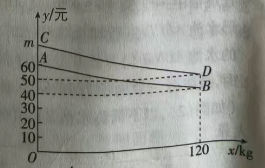
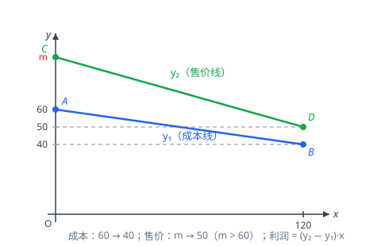

p36 南通质检 成本线售价线求最大利润
函数抛物线(最大利润)
待定系数法一次函数二次函数含参最值利润问题
★★★★

📷 点击查看原图
[2026·江苏南通质检] 某企业生产并销售某种产品，假设销售量与产量相等。图中的线段 AB 表示该产品每千克生产成本 y1（单位：元）与产量 x（单位：kg）之间的函数关系；线段 CD 表示该产品每千克售价 y2（单位：元）与产量 x（单位：kg）之间的函数关系。已知 0<x≤120，m>60。
（1）求线段 AB 所表示的 y1 与 x 之间的函数关系式；
（2）若 m=90，该产品产量为多少时，获得的利润最大？最大利润是多少？
（3）若 60<m<70，则销售该产品获得的最大利润是______元。
📌 知识点总结（点击展开／收起）
📌 知识点总结
| 知识点 | 说明 |
|---|
| 待定系数法求一次函数 | 由线段两端点坐标求 y=kx+b：A(0, 60)、B(120, 40) 在成本线上，C(0, m)、D(120, 50) 在售价线上 |
| 总利润 | 产量 = 销量，每千克利润 =y2−y1（售价 − 成本），总利润 w=x(y2−y1) |
| 二次函数配方求最值 | w=a(x−h)2+k：a<0 开口向下取顶点最大值；a>0 开口向上需看单调性 |
| 开口向上时在区间端点取最大 | 含参系数 12070−m>0 开口向上，且对称轴在 y 轴左侧，故 0<x≤120 上 w 单调递增，最大值在 x=120 取得 |
| 含参定值问题 | 把 wmax 化简后参数 m 恰好消去，得到与 m 无关的定值 |
✍️ 解题过程
第（1）问：求线段 AB 的函数关系式
第一步：读图取点。成本线段 AB 过 A(0, 60) 与 B(120, 40)（A 在 y 轴上对应 60；B 在 x=120 处，由虚线对应 40）。
第二步：待定系数法。设 y1=kx+b。把 A(0, 60) 代入得 b=60；再把 B(120, 40) 代入：
120k+60=40⟹120k=−20⟹k=−61
y1=−61x+60(0<x≤120)
✅（1）答案：y1=−61x+60（0<x≤120）
第（2）问：m = 90 时求最大利润
第一步：先求售价线 y2。m=90 时售价线过 C(0, 90)、D(120, 50)。设 y2=kx+b，得 b=90；代入 D 点：
120k+90=50⟹k=−12040=−31⟹y2=−31x+90
第二步：写每千克利润。每千克利润 = 售价 − 成本 =y2−y1：
y2−y1=(−31x+90)−(−61x+60)=(−62+61)x+30=−61x+30
第三步：写总利润并配方。产量 x kg 全部售出，总利润 w=x(y2−y1)：
w=x(30−61x)=−61x2+30x=−61(x2−180x)=−61(x−90)2+61×8100
w=−61(x−90)2+1350
第四步：定最值。抛物线开口向下（−61<0），对称轴 x=90 恰在范围 0<x≤120 内，所以顶点处取得最大值：
x=90 时，wmax=1350
检验（区间内另取两点对比）：x=120 时 w=120×(30−20)=1200；x=60 时 w=60×(30−10)=1200。均小于 1350，确实 x=90 时最大。
✅（2）答案：产量为 90 kg 时利润最大，最大利润 1350 元
第（3）问：60 < m < 70 时的最大利润
第一步：含参写出 y2。售价线过 C(0, m)、D(120, 50)：b=m；代入 D 点得 120k=50−m，即 k=−120m−50：
y2=m−120m−50x
第二步：写每千克利润（含 m）。
y2−y1=(m−120m−50x)−(60−61x)=(m−60)+(61−120m−50)x
第三步：通分合并 x 的系数。61=12020，所以 x 的系数为：
12020−120m−50=12020−(m−50)=12070−m
第四步：写总利润。
w=x[(m−60)+12070−mx]=(m−60)x+12070−mx2
第五步：判断开口方向与对称轴位置。因为 60<m<70：
① 二次项系数 12070−m>0，抛物线开口向上；
② 对称轴 x=−2×12070−mm−60=−70−m60(m−60)<0（分子 m−60>0、分母 70−m>0，整体带负号），在 y 轴左侧。
所以在对称轴右侧（即整个范围 0<x≤120）内，w 随 x 增大而增大，最大值在右端点 x=120 处取得。
第六步：代 x=120 求最大值。
wmax=(m−60)×120+12070−m×1202=120(m−60)+120(70−m)
wmax=120[(m−60)+(70−m)]=120×10=1200
合并时 m 恰好消掉，最大利润是与 m 无关的定值 1200 元（此时产量为 120 kg）。
检验（取 m=65 代入验证）：y2=65−12015x，y2−y1=5+24x，w=5x+24x2；x=120 时 w=600+600=1200 ✓；x=90 时 w=450+337.5=787.5<1200 ✓。

📷 点击查看原图
图：成本线 AB 过 A(0, 60)、B(120, 40)；售价线 CD 过 C(0, m)、D(120, 50)；m>60 时售价始终高于成本，每千克利润 =y2−y1
✅（3）答案：产量为 120 kg 时利润最大，最大利润为 1200 元（定值，与 m 无关）